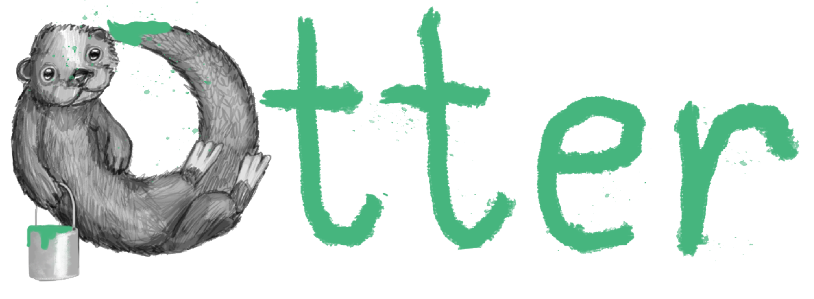

<ion-header [translucent]="true">
  <ion-toolbar>
    <ion-buttons slot="start">
      <ion-menu-button></ion-menu-button>
    </ion-buttons>
    <ion-title *ngIf="(team$ | async)">Resources</ion-title>
  </ion-toolbar>
</ion-header>

<ion-content [fullscreen]="true">
  <ion-header collapse="condense">
    <ion-toolbar>
      <ion-title size="large" *ngIf="(team$ | async)">Resources</ion-title>
    </ion-toolbar>
  </ion-header>

  <ion-fab horizontal="end" vertical="top" slot="fixed" edge>
    <ion-fab-button (click)="addResource()">
      <ion-icon name="'add' + '-outline'"></ion-icon>
    </ion-fab-button>
  </ion-fab>

  <div id="container">
    <ion-list lines="none" class="theme--list">

      <ion-card class="ion-padding" *ngFor="let link of (resources$ | async)" (click)="viewSite(link)" button>
        <ion-item class="theme--item" *ngIf="!link.preview; else linkPreview">
          <ion-label text-wrap>
            <h2><strong>{{ link.name }}</strong></h2>
            <p>{{ link.url }}<p>
          </ion-label>
        </ion-item>
        <ng-template #linkPreview>
          <ion-item class="theme--item" *ngFor="let linkData of link.preview.result">
            <ion-avatar class="resources--avatar" slot="start">
              
              <ng-template #otterHead>
                <ion-icon name="link-outline"></ion-icon>
                <!--  -->
              </ng-template>
            </ion-avatar>
            <ion-label text-wrap>
              <h2><strong>{{ linkData.title }}</strong></h2>
              <h3>{{ linkData.description }}</h3>
              <p>{{ linkData.url }}</p>
            </ion-label>
            <ion-thumbnail class="resources--thumbnail" slot="end">
              
              <ng-template #otterLogo>
                
              </ng-template>
            </ion-thumbnail>
          </ion-item>
        </ng-template>
      </ion-card>

      <ion-item lines="none" class="theme--item"></ion-item>

    </ion-list>
  </div>
</ion-content>